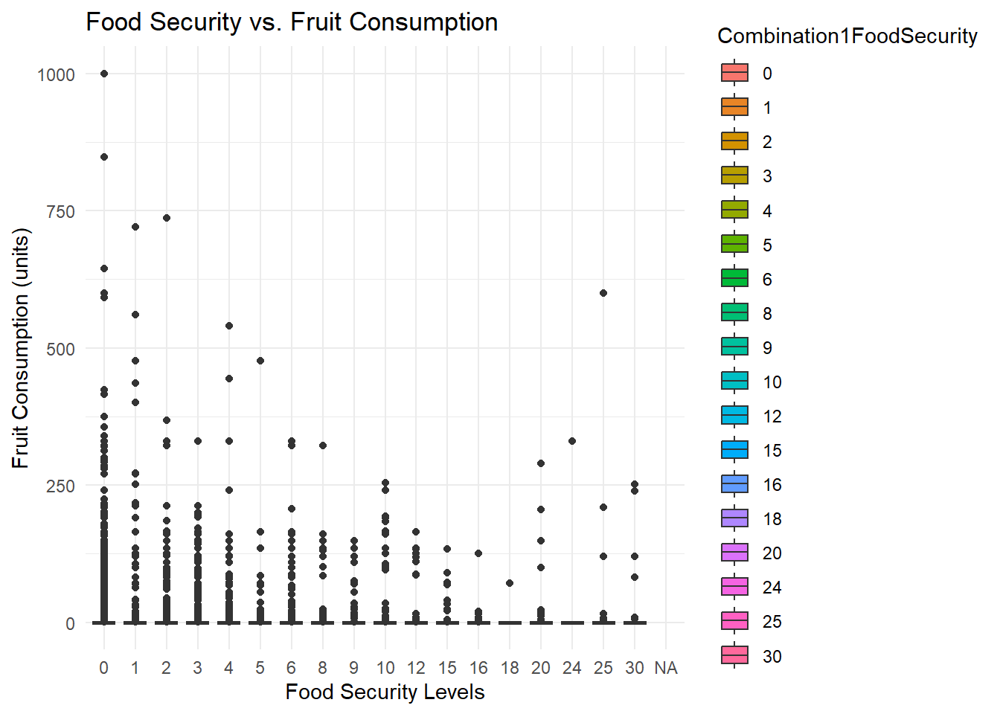

Page1?
Plot with Richard
Looking at Food Security Hackathon event 2
Here is the breakdown: 0 –> Food secure 1-3 Moderate 4-30 Low/Very Low
But the plot above is not right as each user has many inputs, so i need to aggreagate them by user
# Extracting relevant columns
food_data <- intake_data[, c("Combination1FoodSecurity", "Fruit", "Driedfruit", "Fruitjuice", "Smoothiefruit", "Tomatoes")]
# Convert Combination1FoodSecurity to factor if not already
food_data$Combination1FoodSecurity <- as.factor(food_data$Combination1FoodSecurity)
# Plotting the comparison of food security levels with fruit consumption
ggplot(food_data, aes(x = Combination1FoodSecurity, y = Fruit, fill = Combination1FoodSecurity)) +
geom_boxplot() +
labs(title = "Food Security vs. Fruit Consumption",
x = "Food Security Levels",
y = "Fruit Consumption (units)") +
theme_minimal()Warning: Removed 391 rows containing non-finite outside the scale range
(`stat_boxplot()`).
# Repeat for other fruit/vegetable columns like Driedfruit, Fruitjuice, etc.